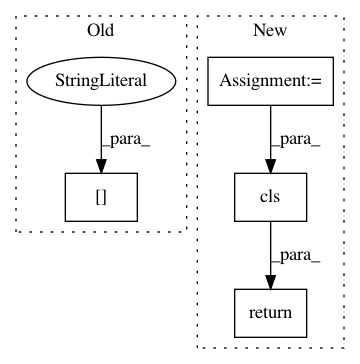

13fc68c1fbc73ba9791863d5976e529133a7786e,src/sagemaker/processing.py,ProcessingJob,from_processing_name,#Any#Any#Any#,635
Before Change
source=job_desc["ProcessingOutputConfig"]["Outputs"][0]["S3Output"][
"LocalPath"
],
destination=job_desc["ProcessingOutputConfig"]["Outputs"][0]["S3Output"][
"S3Uri"
],
output_name=job_desc["ProcessingOutputConfig"]["Outputs"][0]["OutputName"],
After Change
destination=processing_output["S3Output"]["S3Uri"],
output_name=processing_output["OutputName"],
)
for processing_output in job_desc["ProcessingOutputConfig"]["Outputs"]
]
output_kms_key = None
if job_desc.get("ProcessingOutputConfig"):
output_kms_key = job_desc["ProcessingOutputConfig"].get("KmsKeyId")
return cls(
sagemaker_session=sagemaker_session,
job_name=processing_job_name,
inputs=inputs,
outputs=outputs,
output_kms_key=output_kms_key,
)
@classmethod
def from_processing_arn(cls, sagemaker_session, processing_job_arn):
Initializes a ``ProcessingJob`` from a Processing ARN.
In pattern: SUPERPATTERN
Frequency: 4
Non-data size: 4
Instances
Project Name: aws/sagemaker-python-sdk
Commit Name: 13fc68c1fbc73ba9791863d5976e529133a7786e
Time: 2020-03-10
Author: knakad@amazon.com
File Name: src/sagemaker/processing.py
Class Name: ProcessingJob
Method Name: from_processing_name
Project Name: keras-team/autokeras
Commit Name: 8b6e3d42daeeada6dc929620288a2847a795e6e1
Time: 2020-10-30
Author: abraham.g.sebastian@gmail.com
File Name: autokeras/preprocessors/common.py
Class Name: CategoricalToNumerical
Method Name: from_config
Project Name: tensorflow/datasets
Commit Name: 83218b7cb41cbcd3b4800313ecd8fe33b846205a
Time: 2020-08-07
Author: cs17btech11040@iith.ac.in
File Name: tensorflow_datasets/core/features/features_dict.py
Class Name: FeaturesDict
Method Name: from_json_content